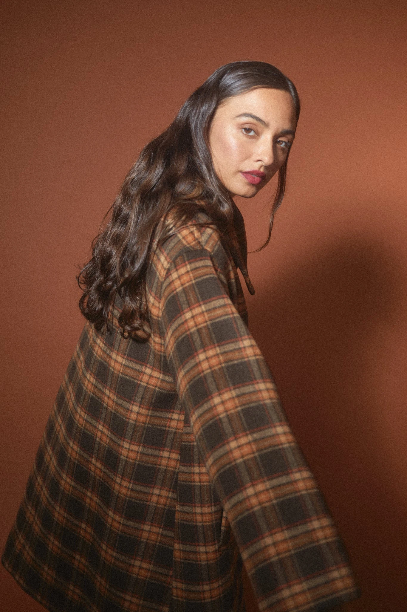

OUR POINT OF VIEW
Every day.
A different
motion.
하나의 점에서 시작된 작은 움직임.
점이 이어지고, 겹쳐지고, 일상의 레이어가 됩니다.
모션레이어는 정해진 방식보다 각자의 속도를 생각합니다.
편안하게 입고, 자유롭게 움직이고, 자연스럽게 당신답게.



Made to move.
Made for you.
Motion Layer follows the rhythm of everyday life. Thoughtful womenswear, made to layer, move, and feel like you. A different kind of motion, at your own pace.
PIECES FOR YOUR EVERYDAY
LAYER BY LAYER
가볍게 입고, 자유롭게 겹치는
여섯 가지 일상의 움직임.
Everyday pieces, your own rhythm.
View all piecesView allMade to move. Made for your everyday.
THE LAYERING EDIT
나만의 속도로, 나만의 방식으로.
일상에 더하는 새로운 한 겹.
One more layer, your own way.
View all piecesView allHOW ARE YOU FEELING?
MOTION LAYER / LOOKBOOK
멀리 가지 않아도 괜찮은 날.
평범한 순간에서 발견하는 새로운 움직임.
OUR POINT OF VIEW
하나의 점에서 시작된 작은 움직임.
점이 이어지고, 겹쳐지고, 일상의 레이어가 됩니다.
모션레이어는 정해진 방식보다 각자의 속도를 생각합니다.
편안하게 입고, 자유롭게 움직이고, 자연스럽게 당신답게.